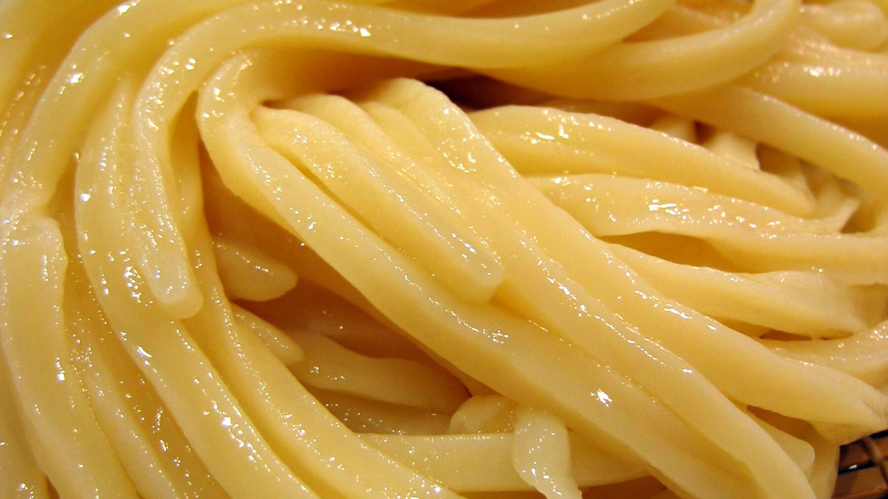

Zurück zur Übersicht
Udon-Nudeln selber machen
Dicke japanische Weizennudeln aus nur drei Zutaten, mit dem Pastaroller oder dem Nudelholz.
- Zeit
- 40 Min.
- Schwierigkeit
- mittel
- Kategorie
- Teige & Grundrezepte
- Ernährung
- vegan
Zutaten
Portionen
- 200 gWeißmehl
- 110 gLauwarmes Wasser
- 10 gSalz
- 2 ELMaisstärke (ca.)
Zubereitung
- Das Salz im lauwarmen Wasser auflösen und mit dem Mehl in der Küchenmaschine 10 Minuten zu einem geschmeidigen Teig kneten. Zu einer Kugel formen und in Frischhaltefolie 1 Stunde bei Raumtemperatur ruhen lassen.
- Die Kugel halbieren und jede Hälfte mit dem Nudelholz zu einem Rechteck ausrollen.
- Mit Pastaroller: Roller, Arbeitsfläche und Hände mit Maisstärke bestäuben. Den Teig zweimal mit dem größten Walzenabstand durchlaufen lassen, dann den Abstand jeweils um eine Stufe verringern und wieder zweimal durchlaufen lassen, bis der Teig etwa 3 mm dick ist. Dabei immer gut mit Maisstärke bestäuben. Beim Kenwood-Pastaroller ist das Stufe 2.
- Ohne Pastaroller: Den Teig mit dem Nudelholz 3–4 mm dick ausrollen. Das braucht etwas mehr Geduld und Muskelkraft.
- Den Teig wie ein Akkordeon aufeinanderlegen und mit einem scharfen Messer in etwa 3 mm breite Nudeln schneiden. Sie werden beim Kochen noch etwas dicker. Mit dem zweiten Rechteck genauso verfahren.
- Die Nudeln 10 Minuten in kochendem Salzwasser garen, in ein Sieb abgießen und kalt abspülen.
Hinweis: Die 40 Minuten gelten ohne die 1 Stunde Ruhezeit.